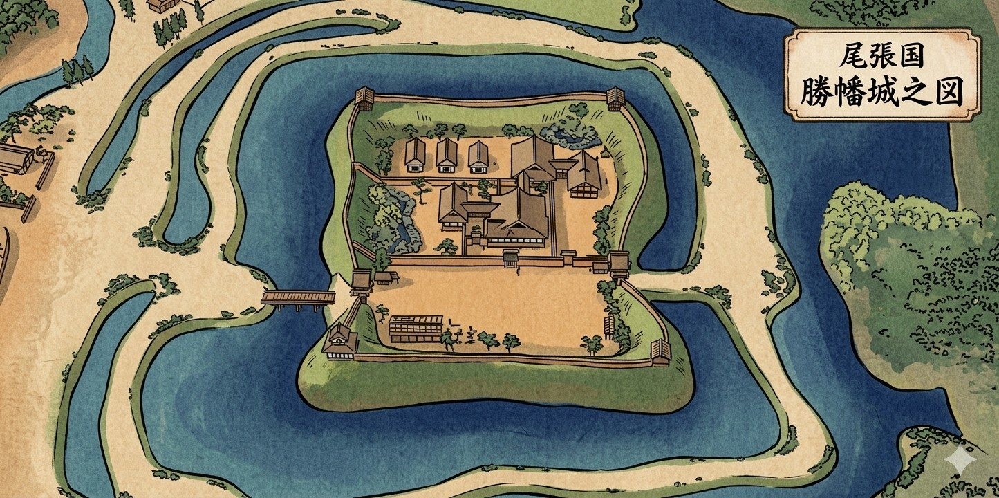
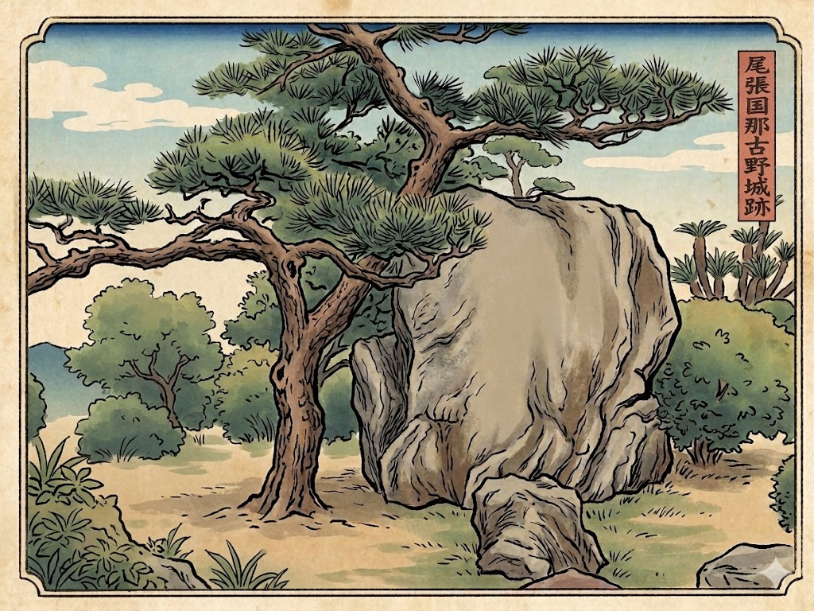
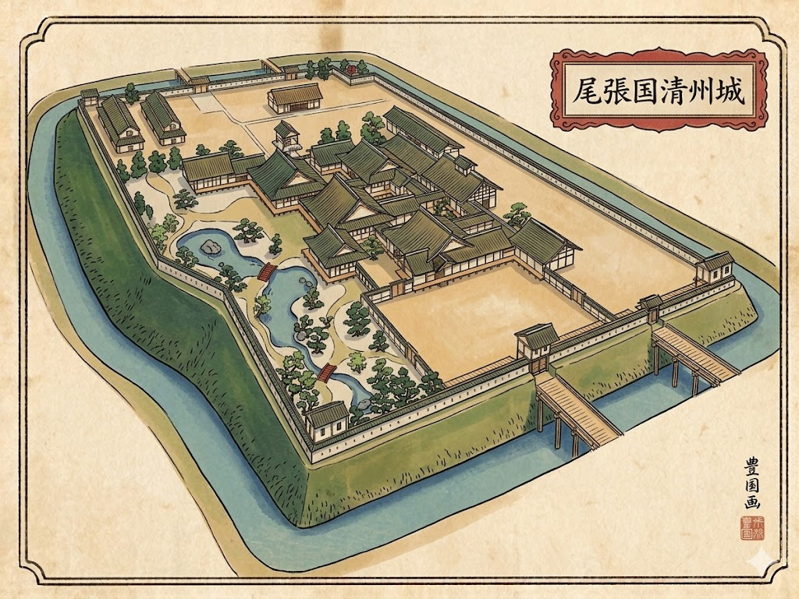
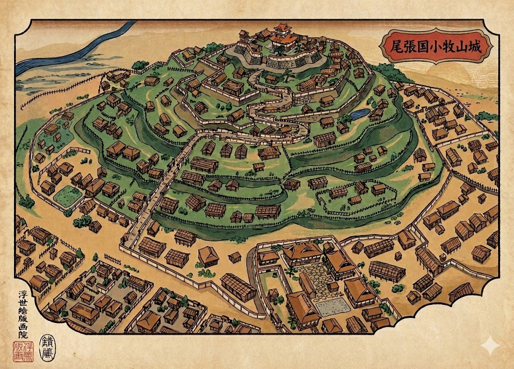
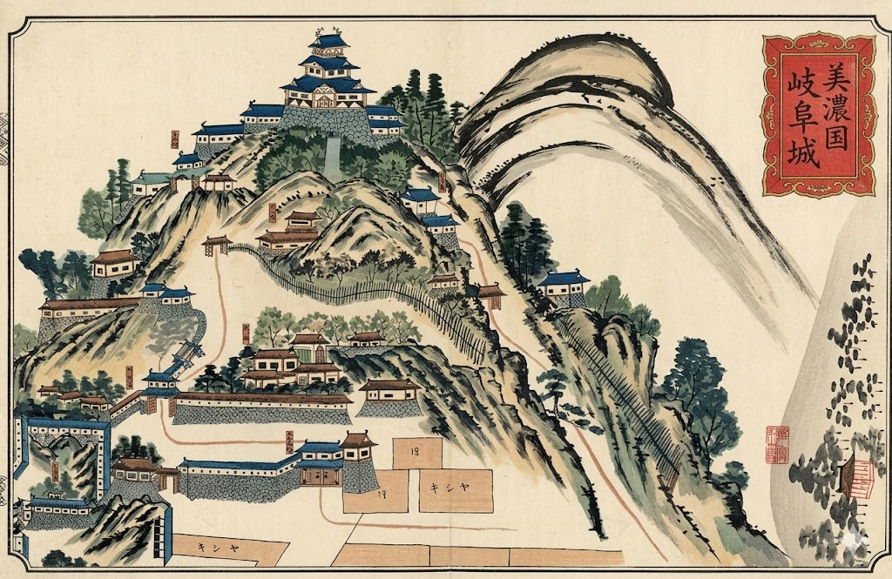
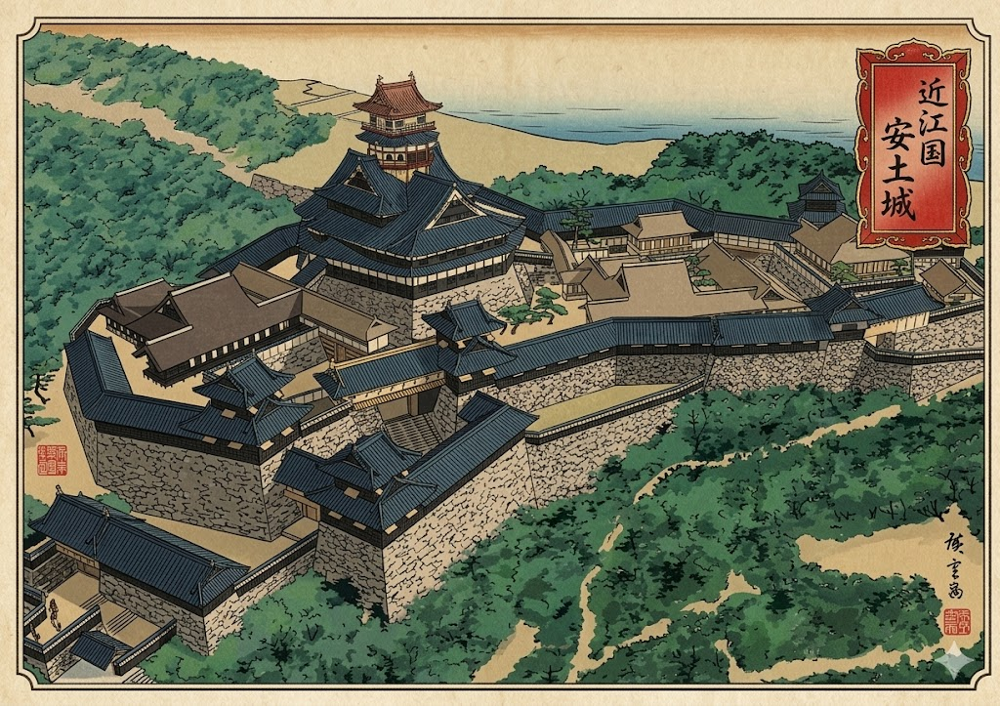

〜 信長公の歩みと歴史の庵 〜
戦国時代の風雲児・織田信長。彼が築き、拠り所とした城郭を巡りながら、天下布武への道を辿ります。

信長公の生誕地とされる城。尾張と伊勢を結ぶ交通の要所に築かれた、織田弾正忠家発展の礎となった平城です。

父・信秀から譲り受け、信長公が青年時代を過ごした拠点。現在の名古屋城二の丸付近に位置していました。

尾張統一の本拠地。桶狭間の戦いへ出陣した地であり、ここから天下への第一歩が刻まれました。

美濃攻略のために築かれた大規模な城郭。信長公が初めて自ら設計し、石垣を本格的に採用し始めた記念すべき城です。

「天下布武」の印を使い始めた地。金華山の山頂にそびえ、その壮麗さは宣教師ルイス・フロイスも驚嘆したと言われています。

信長公の集大成。五重六階の絢爛豪華な天主（安土山）がそびえ、城郭建築の歴史を塗り替えた幻の名城です。